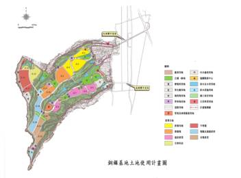

- 補助各類計畫相關公文及注意事項
- 2014/02/27 -公開徵求103年醣科學研究專案計畫
- 2014/02/24 -公告本會102年度傑出特約研究員獲獎人員名單
- 2014/02/21 -停機公告：2014年02月23日星期日 13:00~24:00進行伺服器修補程式(Hot-Fix)更新，屆時對外網站服務將停止。
- 2014/02/20 -本會103年度「自由型卓越學研試辦計畫」，自即日起受理申請。
- 2014/02/18 -【國家理論科學研究中心】第四階段運作計畫徵求公告
- 2014/02/17 -103年度國科會災害防救應用科技方案研究計畫第二次徵求公告
- 補助各類計畫相關公文及注意事項
- 2014/02/27 -公開徵求103年醣科學研究專案計畫
- 2014/02/20 -本會103年度「自由型卓越學研試辦計畫」，自即日起受理申請。
- 2014/02/18 -【國家理論科學研究中心】第四階段運作計畫徵求公告
- 2014/02/17 -103年度國科會災害防救應用科技方案研究計畫第二次徵求公告
- 2014/02/14 -「補助國內舉辦國際學術研討會」第一期申請案將於103年3月1日起至3月31日止接受申請
- 2014/02/12 - 徵求2014年台灣-蒙古(NSC-MECS)雙邊共同研究計畫及雙邊學術研討會
- 2014/2/26解密太陽系形成的關鍵–存在大量的類冥王星天體
- 2014/2/19科學園區102年營收及出口再創新高
- 2014/2/19中央研究院與陽明大學聯手--打造典範生醫人才培育課程
- 2014/2/12育苗「小蘋果」，催生資通訊產業翻新
- 2014/1/27神經迴路異常－ 自閉症的成因與可能之治療
- 2012/9/20關於中國時報報導「邀媒體抽平板國科會錢太多」說明
- 2012/6/27有關報載園區營業額衰退之說明
- 2012/5/10行政院國科會對中科四期引水工程相關事項之說明
- 2012/5/4中科管理局對將后里區成功路工程之說明
- 補助各類計畫相關公文及注意事項
- 2014/03/04 - 【Call for Paper】IFIP EGOV
- 2014/03/04 -【Call for Paper】IFIP ePart2014
- 2014/03/04 -【Call for Paper】EGOVIS 2014
- 2014/03/04 -研討會邀請: 『3/11(二) Future of Cities城市未來研討會 : 全球水岸城市的創新策略』
- 2014/03/04 -[Kind reminding] 2014年服務科學暨創新國際研討會 [徵稿] [截稿日期延至3/10] (ICSSI 2014) CFP
- 補助各類計畫相關公文及注意事項
- 2014/03/04 -衛生福利部計畫徵求學士或碩士級專任研究助理
- 2014/03/04 -國立臺中科技大學企業管理系誠徵校務基金進用教學人員(專案助理教授)公告
- 2014/03/04 -國立清華大學教務處誠徵專題計畫助理人員2名
- 2014/03/04 -中華醫事科技大學招生聯合服務中心誠徵「招生專員」1名
- 2014/2/21 - 「性別工作平等法施行細則」第十三條、第十四條，業經行政院勞工委員會於103年1月16日以勞動3字第1030130033號令修正發布施行，詳如附件。
- 2014/2/12 -公告辦理「中部科學工業園區第三期發展區(后里基地-七星農場部分)開發計畫」環境影響說明書公開說明會相關事宜。
- 2014/2/12 -工商協進會訂於本(103)年2月21日假台北國際會議中心演講「如何運用科技技術防止職場舞弊」，免收費用。
- 2014/2/11 -南科交通安全宣導影片歡迎點閱
- 2014/2/11 -計畫徵求公告「103學年度科學工業園區人才培育補助計畫」即日起開始受理申請!
銅鑼園區
銅鑼園區總面積約350公頃，位於中山高速公路140公里處，北距新竹園區42公里、竹南園區30公里。南距中科后里園區20公里、台中園區34公里。新增之中山高速公路銅鑼交流道工程，高公局目前正辦理工程規劃設計作業，預定98年發包動工，預估可於100年中完工使用，完工後可提供便捷之客、貨運輸。 銅鑼園區於95年12月起陸續辦理第一階段南側開發範圍第一～四標工程發包施工，目前可同步供客家文化中心苗栗園區動土興建，並預定於98年初可提供7.9公頃廠商同步建廠用地。 另第一階段北側開發工程及旱坑跨谷橋工程預定於97年7月發包施工，完工後可提供28.74公頃建廠用地。 更多訊息
更多消息科普知識
鋰電池防爆「金鐘罩」–STOBA材料技術財團法人工研院材料與化工研究所的潘金平組長開發出的「STOBA材料技術」，能有效防止鋰電池爆炸，大幅提升鋰電池的安全性，這項關鍵性突破為台灣綠能產業的發展帶來新契機。
<詳全文> 更多消息